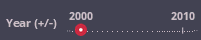
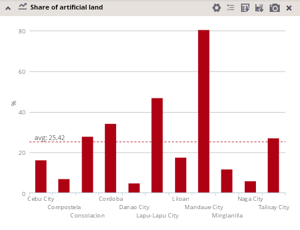
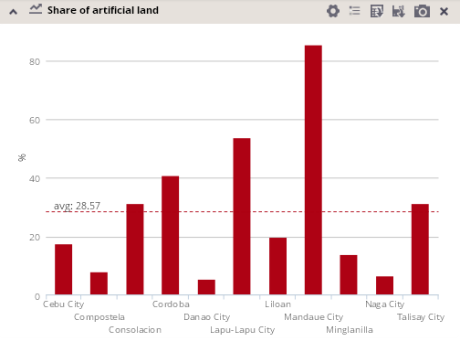
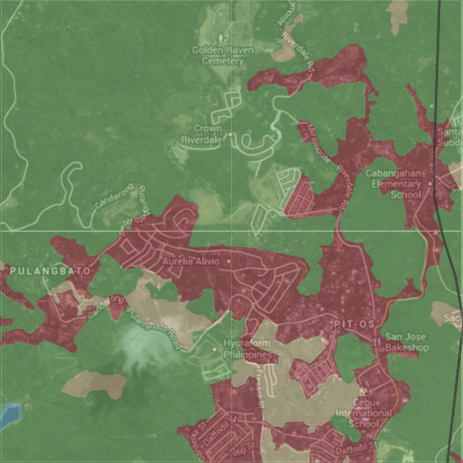
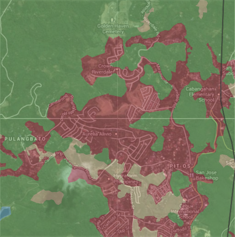

Switching the year of interest
The year switcher provides a possibility to change the year of interest.
This gives you an important functionality of comparison of both quantitative and spatial characteristics of the data between different available years.
Please note that the year label (e.g. 2000, 2010) is a generalization that represents the interval of real reference years, which can be different for different locations (e.g. 1998 – 2003 is represented by the label 2000). This fact is indicated by the sign +/- behind the label "year": .
A different number of years appears on the "year switcher axis", depending on data availability for particular datasets:
, etc.
By default, the most current year is selected on the axis, after each application startup.
You can select the year of your interest by clicking on the corresponding circle on the axis:

Modification of the year of interest reloads the data values, which are visualized in the tool; it also reloads several map layers, which correspond with the particular year.
An example of change of indicators values and map appearance after switching the year of interest is provided bellow:


Also a multiple years mode is provided by the application, which enables you to compare values in charts, tables or maps for both selected years in the same time.